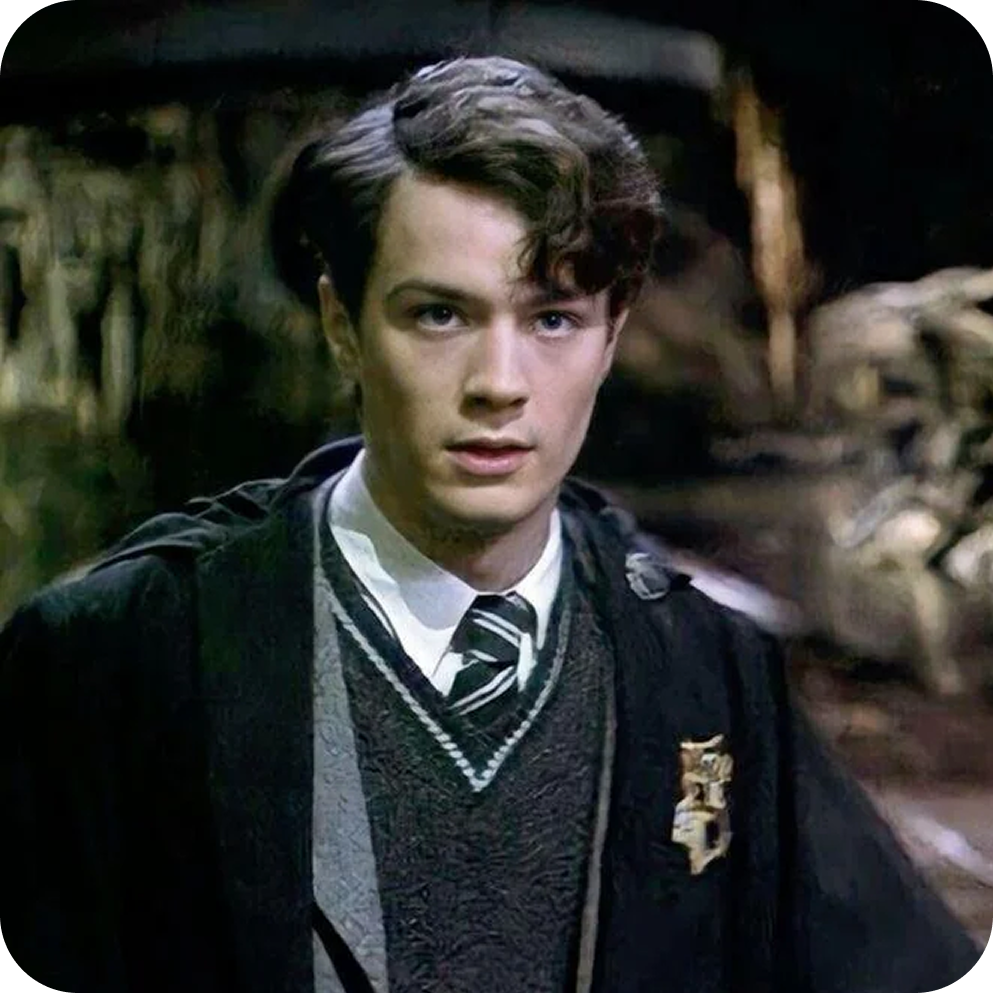

Tom Servolo Riddle
Tom Servolo Riddle (Lord Voldemort) Filho de um trouxa e uma bruxa descendente de Slytherin, Tom cresceu em um orfanato e logo mostrou talento para magia sombria.
Em Hogwarts, foi Sonserino e descobriu ser herdeiro de Salazar Slytherin, abrindo a Câmara Secreta. Obcecado pelo poder e imortalidade, criou Horcruxes para dividir sua alma. Como Voldemort, tornou-se o bruxo das trevas mais temido, mas sua incapacidade de amar o levou à derrota por Harry Potter.
voltar >